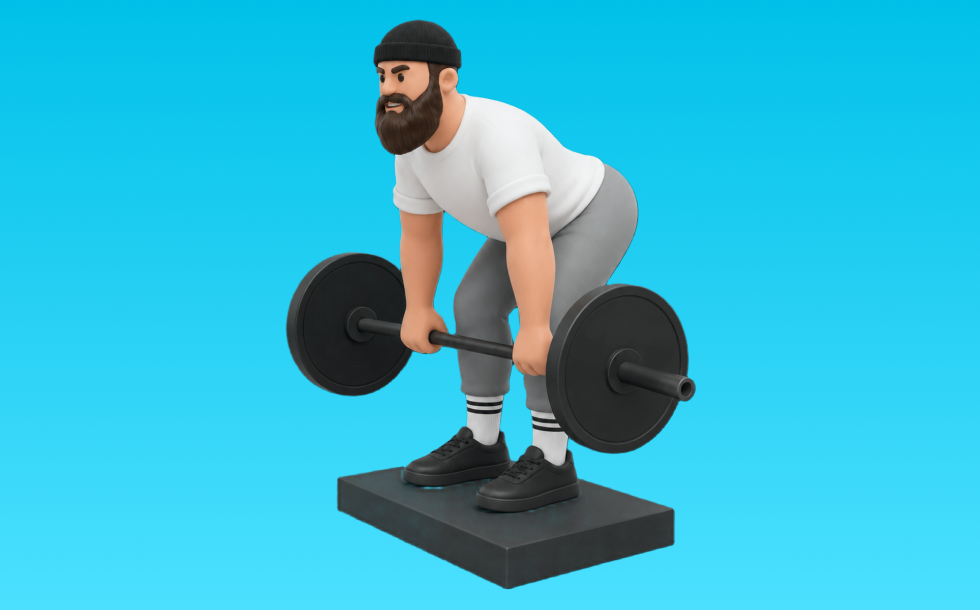

デフィシットデッドリフト

デフィシットデッドリフトとは、バーベルを使って「股関節で持ち上げる」動作で臀筋、ハムストリング、脊柱起立筋を鍛える種目です。高重量を扱いやすく、筋力を伸ばしやすいのが特徴で、背すじを保ち、股関節で持ち上げてゆっくり下ろす動作を繰り返します。下半身の筋力・筋量アップが期待できます。
- 対象部位
- 脚
- 器具
- バーベル
- 記録形式
- 重量・回数
- 別名
- デフィシットデッド
YouTube動画
-
デフィシットデッドリフト・ラックデッドリフト
-
【Back Day】やってはいけないデッドリフトフォーム
-
【練習フル動画】”袋”加重で行うディフィシットデッドリフト
-
デッドリフトのバリエーション種目
-
最もわかりやすいデッドリフト解説。世界チャンピオンが教えるナローデッドリフト
-
（Dead Lift）デッドリフト強化
-
デッドリフト使い分け後編！全字幕付き！
-
デフィシットデッドリフト＆フロントスクワット
-
デフィシットとルーマニアンでデッドリフト強化
-
【初心者】正しいスモウデッドリフトのやり方 | 背中の種目？脚の種目？ 【ビーレジェンド プロテイン】
-
デッドリフトで背中を曲げない方法｜DL 200kg REPS CHALLENGE【やよい軒？】
YouTubeショート
-
【MUSTER】ディフィシットデッドリフト
-
持田選手に2種類のデッドリフトについてレクチャーしていてもらいました！次はどの種目の解説をやってほしいかコメントしてね！#筋トレ #volix #トレーニング #ちょこっと惜しい
-
【デッドリフト】腰を痛める3つの間違い #パーソナルトレーナー #筋トレ #デッドリフト
-
体に擦りつけて引くデッドリフト #フォーム解説 #ボディメイク #筋トレ
-
デフィシットデッドリフト
-
ディフィシットデッドリフト
-
デッドリフト補助種目ディフィシットポーズ210kg
-
デッドリフト ディフィシット10cm ポーズ 180kg 最新版のオチ
-
朝倉未来ストーリー90kgデッドリフト
-
正しいルーマニアンデッドリフト4つのポイント #筋トレ
-
大会2週間前のハーフデッドリフト #筋トレ女子
-
ルーマニアンデッドリフトとスティフレッグデッドリフト#脚トレ #尻トレ #デッドリフト
-
ルーマニアンデッドリフト（Romanian Deadlift）のやり方とフォーム
-
Dificit Deadlift(ディフィシット・デッドリフト) １９０kg
-
【背中トレ】デフィシットデッドリフト
-
スモウデッドリフトはチートなのか #デッドリフト#ボディビル #フィットネス #ジム #筋肉 #ステロイド #パワーリフティング
-
ディフィシットデッドリフト230㎏ #shorts
-
デッドリフトぶっこ抜き180kg ディフシットデッド
-
RDLとスティッフレッグデッドリフトについて #トレーニング #筋トレ #ジム #デッドリフト
-
ディフィシットデッド 160×3
-
ディフィシットスナッチデッドリフト230kg
-
エニタイムに体験に行ってイキリデッドリフトやる悪い人 #powerlifting #benchpress #squat #deadlift
-
正しいマシンの使い方「デッドリフト」。肉体改造で、背中で語れる男へ！
-
Deficit DL デフィシット デッドリフト 赤硬 120KGX5reps
-
ナローデッドリフト185kgPR!!少しデフィシット気味【BIG3】#筋トレ #shorts
-
ポーズデッドリフト PauseDeadlift
-
デッド楽しい！ #筋トレ #フィットネス #筋肉 #ジム #ステロイド
-
デッドリフトの補助種目 ディフィシット10cm ポーズデッドリフト220kg
-
ディフィシットデッド100、187.5kg
-
ディフィシットスナッチデッドリフト235kg
動作方法
- 背中を中立に保ち、股関節から動き始める
- もも裏の張りを感じる位置まで下ろす
- 足裏で床を押して立ち上がる
動作ポイント
- 背中を丸めない
- 膝を伸ばしきらない
- バーや重りを体から離しすぎない
ワンポイントアドバイス
- ウォームアップで股関節と足首を動かす
- 高重量の日はセーフティ設定を確認する
目的別回数設定
目的や体力に応じた一般的な目安です。無理のない範囲で調整してください。
- 筋力アップ
- 1〜5回
- 筋肥大
- 6〜12回
- 持久力アップ
- 13〜20回
YouTube動画について
動画はYouTubeの公開情報をもとに表示しています。内容は投稿者によるもので、Biggrによる監修ではありません。
アプリを入手
筋トレやトレーニングの記録はBiggrにお任せください。今すぐ無料で使い始められます。